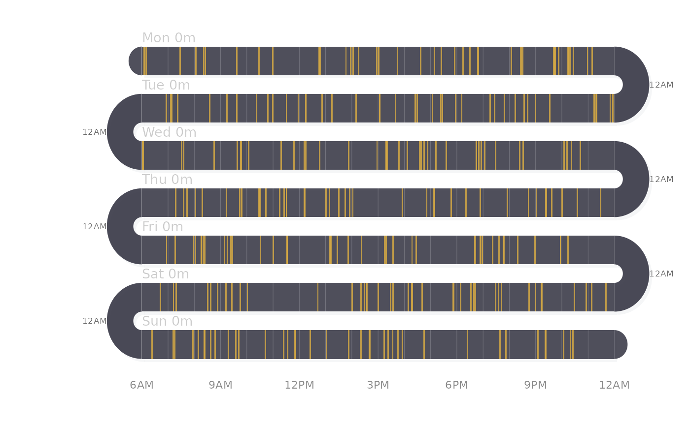
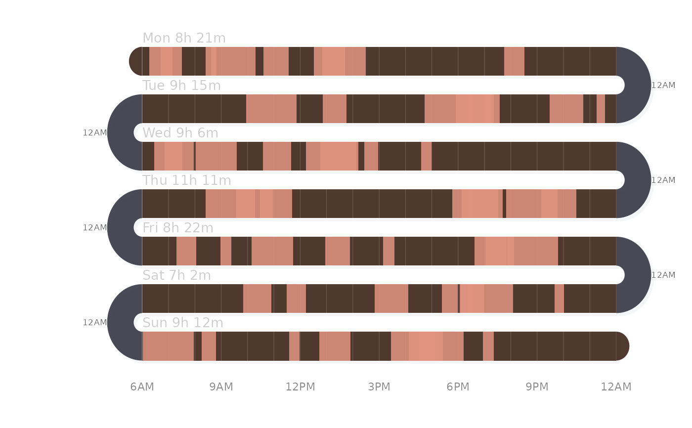

A daily activity timeline where each band is one day and colored ticks or blocks on a dark ribbon represent events. The serpentine (boustrophedon) layout connects days via U-turn arcs.
Usage
activity_snake(
data,
band_height = 28,
band_gap = 18,
day_start = 360,
day_end = 1440,
plot_width = 500,
band_color = "#3d3d4a",
event_color = "#d4a843",
arc_color = "#2a2a3a",
band_opacity = 0.9,
arc_opacity = 0.85,
event_opacity = 0.85,
tick_width = 1.5,
show_grid = TRUE,
show_total = TRUE,
show_count = FALSE,
show_hour_labels = TRUE,
show_arc_labels = TRUE,
shadow = TRUE,
grid_color = "rgba(255,255,255,0.25)",
label_color = "#cccccc",
label_size = 0.85,
label_align = "left",
orientation = c("horizontal", "vertical"),
start_from = c("left", "right"),
flow = c("snake", "natural"),
day_format = NULL,
legend = NULL,
title = NULL,
margin = c(top = 30, right = 10, bottom = 50, left = 80),
background = "white"
)Arguments
- data
Input in one of three formats. (1) POSIXct vector: a bare vector of timestamps, producing rug ticks grouped by day. (2) Numeric format: a data.frame with columns
day(character/factor day label),start(numeric minutes from midnight, 0–1440),duration(numeric minutes; 0 = rug tick), and optionallylabel(character event label). (3) Timestamp format: a data.frame with POSIXct columntimestamp(orstart), optionallyend(POSIXct; if present, duration is computed),duration(numeric minutes; used whenendis absent), andlabel(character event label).- band_height
Numeric. Height of each day band in plot units (default 28).
- band_gap
Numeric. Vertical gap between bands (default 18).
- day_start
Numeric. Start of the time window in minutes from midnight (default 360 = 6AM).
- day_end
Numeric. End of the time window in minutes from midnight (default 1440 = midnight).
- plot_width
Numeric. Width of the band area in plot units (default 500).
- band_color
Character or character vector. Band ribbon color(s). If a vector, colors cycle per day (default "#3d3d4a").
- event_color
Character or character vector. Event tick/block color(s). If a vector, colors cycle per day (default "#d4a843").
- arc_color
Character. Overnight arc color (default "#2a2a3a").
- band_opacity
Numeric 0-1 (default 0.90).
- arc_opacity
Numeric 0-1 (default 0.85).
- event_opacity
Numeric 0-1 (default 0.85).
- tick_width
Numeric. Minimum event width in plot units (default 1.5). Use 1.0 for thin rug style.
- show_grid
Logical. Show hour gridlines (default TRUE).
- show_total
Logical. Show total duration after day label (default TRUE).
- show_count
Logical. Show event count in parentheses after day label (default FALSE).
- show_hour_labels
Logical. Show hour labels at bottom (default TRUE).
- show_arc_labels
Logical. Show "12AM" at arc tips (default TRUE).
- shadow
Logical. Draw drop shadows (default TRUE).
- grid_color
Character. Gridline color (default "rgba(255,255,255,0.25)").
- label_color
Character. Day label color (default "#cccccc").
- label_size
Numeric. Label font size multiplier (default 0.85).
- label_align
Character. Label alignment: "left" (default), "right", or "direction" (follows band reading direction).
- orientation
Character: "horizontal" (default) or "vertical". Controls whether the snake runs left-right or top-bottom.
- start_from
Character: "left" (default) or "right". Which side the first band starts from.
- flow
Character,
"snake"(default) or"natural"."snake"uses alternating boustrophedon direction;"natural"reads all bands in the same direction.- day_format
Optional strftime format for day labels when
startis POSIXct (e.g.,"%a"for "Mon","%Y-%m-%d"for dates). NULL = auto-detect ("%a"for 7 or fewer days,"%Y-%m-%d"otherwise).- legend
List of legend items, each with
labelandcolor. NULL for no legend.- title
Optional plot title.
- margin
Named numeric vector with top, right, bottom, left margins.
- background
Background color (default "white").
Examples
# Weekly rug-style activity plot
set.seed(42)
days <- c("Mon", "Tue", "Wed", "Thu", "Fri", "Sat", "Sun")
d <- data.frame(
day = rep(days, each = 40),
start = round(runif(280, 360, 1400)),
duration = 0
)
activity_snake(d)

# Duration blocks
d2 <- data.frame(
day = rep(days, each = 8),
start = round(runif(56, 360, 1200)),
duration = round(runif(56, 15, 120))
)
activity_snake(d2, event_color = "#e09480", band_color = "#3d2518")
